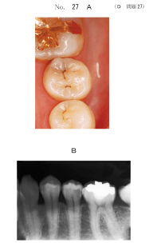
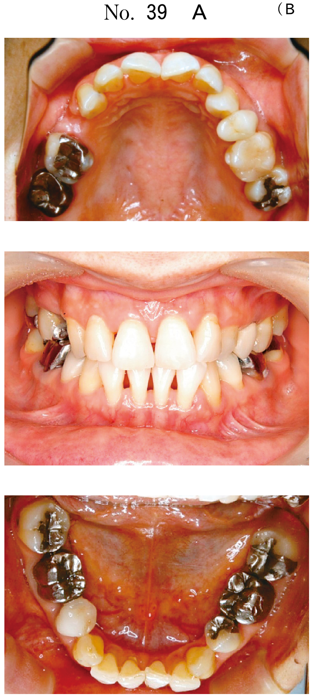

窩洞形態
CR修復窩洞の特徴
コンポジットレジン修復は接着を基本とするため、メタルインレー修復とは窩洞形態が異なる。
- 予防拡大：不要（M.I.の概念）
- 保持形態：不要（接着で保持）
※抵抗形態、便宜形態、窩縁形態は必要
窩洞外形
- 齲蝕部分を完全に除去した実質欠損形態とする
- 原則として予防拡大は行わない
- 咬合圧が直接負荷されない部分に設定
- 歯肉側窩縁は歯肉縁上とする
保持形態
- 歯質への接着を基本とする
- 箱形形成やアンダーカットの付与は不要
- エナメル質の可及的保存によって接着面を確保
- 窩縁へのベベル付与 → 接着面積増加
抵抗形態
- 遊離エナメル質：内面をエッチングしてレジンと接着し、一体化することで保存できる
- 修復物に十分な厚みをもたせる
- 窩縁外にフェザーエッジ状のはみ出しを生じさせない
窩縁形態
- 辺縁漏洩や辺縁破折の防止に重要
- エナメル質はできるだけ横断面となるように設定
- 臼歯部咬合面はノンベベル（またはラウンドベベル）
ベベルの種類と適応
| 種類 | 特徴 | 適応 |
|---|---|---|
| ストレートベベル | レジンが薄くなりやすい 横断面をつくりやすい |
前歯部唇・舌側面 4級修復、切縁破折 |
| ノンベベル （バットジョイント） |
縁端隅角が大きい エナメル小柱を斜めに横断 |
臼歯部咬合面 （咬合力負荷部） |
| ラウンドベベル | 辺縁部に厚みが得られる | 臼歯部咬合面 前歯部唇・舌側面 |
- 接着面積の増大
- 窩縁部亀裂（ホワイトマージン）の防止
- 色調適合性の向上
※拘止効力の付与、重合収縮の補償は目的ではない
Cファクター（C値）
Cファクター = 接着面積 / 非接着面積
C値が大きい → 重合収縮応力の影響を受けやすい → コントラクションギャップが生じやすい
窩洞形態とC値
| 窩洞形態 | 接着面積/非接着面積 | C値 |
|---|---|---|
| 1面接着（開放窩洞） | 1/5 | 0.2 |
| 2面接着 | 2/4 | 0.5 |
| 3面接着 | 3/3 | 1.0 |
| 4面接着 | 4/2 | 2.0 |
| 5面接着（箱型窩洞） | 5/1 | 5.0 |
※1級窩洞（咬合面）、5級窩洞（歯頸部）はC値が大きくなりやすい
コントラクションギャップの予防法
- レジンの分割積層充填
- フロアブルコンポジットレジン（低粘性）の併用
- 修復当日の研磨回避
- 歯質透過光による窩洞内レジンの重合硬化
過去問で確認
メタルインレー修復と比較してコンポジットレジン修復で不要になるのはどれか。2つ選べ。
b 保持形態
c 抵抗形態
d 便宜形態
e 窩縁形態
【解説】CR修復は接着を基本とするため、予防拡大（M.I.の概念で不要）と保持形態（アンダーカット等不要）は不要。抵抗形態、便宜形態、窩縁形態は必要。
上顎前歯唇側面に形成したコンポジットレジン修復窩洞にベベルを付与する目的はどれか。3つ選べ。
b 重合収縮の補償
c 接着面積の増大
d 窩縁部亀裂の防止
e 色調適合性の向上
【解説】ベベル付与の目的は、接着面積の増大、窩縁部亀裂（ホワイトマージン）の防止、色調適合性の向上。拘止効力はメタルインレーの概念、重合収縮の補償はベベルでは達成できない。
26歳の女性。下顎左側第二小臼歯の冷水痛を主訴として来院した。遠心隣接面部に冷風による一過性の疼痛がある。歯髄電気診に反応を示す。初診時の口腔内写真（別冊No.27A）とエックス線写真（別冊No.27B）とを別に示す。コンポジットレジン修復を行うこととした。窩洞形成後と修復後の口腔内写真（別冊No.27C）を別に示す。 窩洞の特徴で正しいのはどれか。2つ選べ。

b トンネル形成
c ラウンドベベル
d 遊離エナメル質
e フレアーカーブ
【解説】写真からトンネル形成（辺縁隆線を残した窩洞形成）と遊離エナメル質（支持のないエナメル質だがCRでは保存可能）が認められる。外開き形態やフレアーカーブはメタルインレーの概念。
窩洞の写真（別冊No.18）を別に示す。 Cファクターが最も大きいのはどれか。1つ選べ。

b イ
c ウ
d エ
e オ
【解説】Cファクター＝接着面積/非接着面積。5面が接着し1面のみ開放している箱型窩洞（1級窩洞のような形態）が最もC値が大きい。写真ウが5面接着の窩洞でC値＝5.0となる。
50歳の女性。上顎右側第一大臼歯の疼痛を主訴として来院した。一過性の冷水痛があるという。金属修復物を除去し、コンポジットレジン修復を行うこととした。初診時の口腔内写真（別冊No.48A）とエックス線写真（別冊No.48B）とを別に示す。 適切な窩洞はどれか。1つ選べ。

b MOL
c MO・OL（2窩洞）
d Mトンネル
e Mトンネル・OL（2窩洞）
【解説】CR修復では辺縁隆線を残すことが可能。M側とL側の齲蝕が独立している場合、辺縁隆線を残してMO窩洞とOL窩洞の2窩洞に分けて修復することで歯質を保存できる。